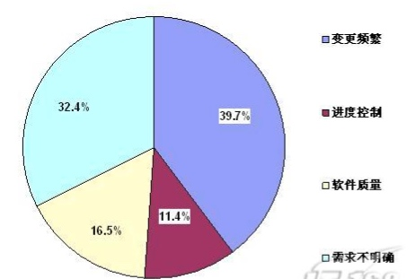
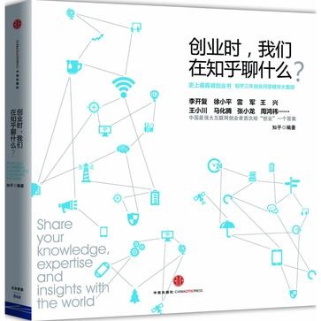

<!DOCTYPE html>
<!--[if IEMobile 7 ]><html class="no-js iem7"><![endif]-->
<!--[if lt IE 9]><html class="no-js lte-ie8"><![endif]-->
<!--[if (gt IE 8)|(gt IEMobile 7)|!(IEMobile)|!(IE)]><!--><html class="no-js"><!--<![endif]-->
<head>
  <meta charset="utf-8">
  <title>
    
  徐梦阳的博客
  

  </title>
  <meta name="author" content="">
  <meta name="description" content="怯懦的人只会埋葬自己">

  <meta name="HandheldFriendly" content="True">
  <meta name="MobileOptimized" content="320">
  <meta name="viewport" content="width=device-width, initial-scale=1">
  
  <link href="asset/css/screen.css" media="screen, projection" rel="stylesheet" type="text/css">
  <link href="atom.xml" rel="alternate" title="sjpsega's Blog" type="application/atom+xml">
  <script src="asset/js/modernizr-2.0.js"></script>
  <script src="asset/js/jquery.min.js"></script>
  <style type="text/css">
  .cat-children-p{ padding: 6px 0px;}
  </style>
  <script type="text/javascript">
  var isAddSildbar = true;
  </script>
  <script src="asset/js/octopress.js" type="text/javascript"></script>
</head>
<script type="text/javascript">
//链接新开窗口
function addBlankTargetForLinks () {
  $('a[href^="http"]').each(function(){
      $(this).attr('target', '_blank');
  });
}
$(document).ready(function(event) {
  addBlankTargetForLinks();
});
</script>
<body   >
  <header role="banner"><hgroup>
  <h1><a href="index.html">徐梦阳的博客</a></h1>
  
    <h2>怯懦的人只会埋葬自己</h2>
  
</hgroup>

</header>
  <nav role="navigation"><ul class="subscription" data-subscription="rss">
  <li><a href="atom.xml" rel="subscribe-rss" title="subscribe via RSS">RSS</a></li>
  
</ul>
  
<form action="http://google.com/search" method="get">
  <fieldset role="search">
    <input type="hidden" name="q" value="site:42wolf.github.io" />
    <input class="search" type="text" name="q" results="0" placeholder="Search"/>
  </fieldset>
</form>
  
<ul class="main-navigation">
  <li><a href="index.html">Home</a></li>
  <li><a href="archives.html">Archives</a></li>
</ul>

</nav>
  <div id="main">
    <div id="content"> 
<div class="blog-index">

	<article>
		 <header>
		  	<h1 class="entry-title"><a href="14304912022246.html">每天进步一点点-送书活动</a></h1>
			<p class="meta"><time datetime="2015-05-01T22:40:02+08:00" 
			pubdate data-updated="true">2015/5/1</time></p>
		 </header>
	  	<div class="entry-content">
		  	
		  	<h2 id="toc_0">为什么要进步</h2>

<p>梦阳君作为一个从农村家庭出来的孩子，自毕业以后来到互联网这个行当以来，便深深的爱上了这个行业，那时我在我的个人博客里写到：</p>

<blockquote>
<p>昨天签了五年的合同。如果不出意外的话，下个月就能转正了。本来我已经习惯了不对别人或别的事情抱有太大的希望，但的确不得不说美团给了我足够多的意外和惊喜。至少于我来说，如同打开了潘多拉魔盒看到了能够窥探的魔法球，看到了更宽广的更大的世界，我来到这里的目的算是达到了</p>
</blockquote>

<p>可能是出于人生前将近二十年未见过世面造成自卑的一种补偿反应，我对在如何找到能够自己不断进步的方法这个问题上耗费了大量的时间和精力。但因为从小扎根在自己身上的坏习惯很难改掉，做一件事情总是很难做到让自己满意，然后又去反思和挣扎，又去尝试，可还是不够满意，工作两年来，始终觉得自己没有什么太大的进步，觉得自己在原地打转，反反复复痛苦不堪。但是我一直都对如何”让自己变得更好”这一点上念念不忘，然后还带着逃避的心情特地写了篇博文<a href="#comment1"><sup>1</sup></a>：</p>

<blockquote>
<p>仔细看了下自己既往以来写过的博文，于是就会想，既然我有写过”总想变得更好”，就应该践行自己的承诺，从目前来说，我做的还远远不够，总的来说，我是没有资格宣扬自己『总想变的更好』这句话的，因为我是个没有节操的人，我根本没有坚持过自己的信念，我该怎么办，似乎问题也总是没有答案， 后来想明白了，该吃吃，该喝喝，想做什么就立马去做，没有必要想太多给自己压太多想做却做不来的事情，于是反而觉得挺不错的。</p>
</blockquote>

<p>然后我又忿忿的在博文里面提到：</p>

<blockquote>
<p>这段时间我又想明白一个很残酷的事实，一切因为愚蠢和懒惰而造成自己命运凄惨的人，都不值得同情，大家都是成年人，在独自面对困境的时候，厮杀还是逃避，每个都需要做出自己的决定，并承担决定的后果，最后，买单。</p>
</blockquote>

<p>这种挣扎的状态持续到现在，终于稍微有了一些改观，我觉得我现在迫切的需要解决这个困扰了我多年的问题，才能让我达到一个新的目标。我觉得这个过程记录下来一定会非常的有意思，便尝试去做一下试试，于是便有了这篇文章。</p>

<h2 id="toc_1">关于如何进步</h2>

<h3 id="toc_2">我的想法</h3>

<p>大家都知道，持续的进步是一个非常困难的事情，因为往往要提升某一个方面的技能/心智水平，一两次的简单练习都是不够的，很多事情都需要大量时间的刻意练习以后才会有效果，比如说编程。但是，我们的动物本能却最期望是，做一件事情，立马就会有反馈，比如说撸管。这就导致了一个矛盾了，做一件有意义的事情，如果没有即时的反馈，就不想去做，而有及时反馈的事情，却往往都不是能够对你长远有好处的事情。李笑来曾经在《把时间当做朋友》里面提到，要尽量的去做没有及时反馈的事情，而往往真正能够真正的提高你，让你能够与众不同的，就是哪些一两次练习没有结果以后你放弃掉的事情。蔡志忠就说过这样一句话：这样持续下去，长此以往，我们便陷入了先有鸡还是先有蛋的怪圈，得不到任何的进步了。</p>

<blockquote>
<p>人生就象走阶梯，每一阶有每一阶的难点。无法克服难点，再怎么努力都只能在原地跳，毫无进展.</p>
</blockquote>

<p>关于进步这一点，我就立刻想到了自己在学习电子的时候想到的一个词：电子跃迁，一个电子只有吸收到一定的能量级以后，才会跃迁到另外一个能量级上，而没有达到那个能量值的时候，电子总是保持自己原来的状态不变的。你看看，这个和我们的进步理论是多么的相似，只有不断的获得能量，才能让自己达到更高阶的能量级！</p>

<p>那么，如何去降低达到这一目标的能力呢？关于这一点，我立马想到的是：<br/>
1、再多坚持一会儿<br/>
2、把一个看起来很遥远的目标拆分成几个关键的点</p>

<h4 id="toc_3">多坚持一会儿</h4>

<p>我们来看第一个，再多坚持一会儿，关于坚持这个方面我尝试过很多事情，但实际的实践过几次以后，我便对自己坚持的能力不抱任何信心了，半年前我在博客里反思的时候说过：</p>

<blockquote>
<p>我目前做了这些事情：坚持每天早起（7天，已经停了）、坚持每天写一篇blog（大学的时候坚持过一个月，现在停了，现在甚至都不能保证每个月一篇了ಥ_ಥ）、坚持每天搞一篇文章放到微信公众号上去（坚持了一个月，现在停了），坚持每天写工作总结（已经坚持了5个月，持续中）、每天玩Clash of clans，已经坚持一年，每天阅读互联网的新闻和资讯以及看书，已经坚持3年，每周看在线视频网站浏览成人影片，已经坚持3年，每周吃喝拉撒睡，已经坚持22年。</p>
</blockquote>

<p>总结就是：简单，容易，好玩，你觉得必须要做的事情就容易坚持下去，光靠毅力去做却没有任何收获的事情，对于我这种人来说，是很难达到的，当然，对于毅力非常强的同学，根本就不存在这样的问题啦，哈哈。我觉得做事情的时候不尝试去挑战客观规律，做起来不会太累。</p>

<p>我的原则是，在不擅长的地方，能捞点就多捞点，不要花太多的精力，我现在每天花五分钟，有意识的训练自己玩了一年半的clash of clans，虽然觉得没啥好玩的，仅仅是为了锻炼自己的毅力，因为我觉得，坚持是一件潜移默化的事情，一年多到现在已经有了一些进步，至少我现在再也没有出现过把一件事情扔下去撒手不管的情况了。而且，很有意思的一点是，当时说好和我一起坚持玩的小伙伴，现在已经没有一个人在玩了。</p>

<h4 id="toc_4">拆分目标</h4>

<p>我们再来看，拆分目标这一点，就像我上面说的电子跃迁一样，如果把跃迁的门槛放低一点呢？就好比说，本来我们从10到100，是本质性的变化，那么，我们能不能尝试着发扬一下啊Q精神，告诉一下自己：”从10到11就很了不起了！”李笑来曾经说过一个他朋友学习GRE的故事</p>

<blockquote>
<p>“我的一个朋友曾跟我分享他的做法。当年他终于搞明白自己要拿到奖学金就得获得GRE高分的时候，被单词量要求吓了一跳。他说，他用了两天时间才想办法说服了自己这应该是件快乐的事情。一共要搞定20,000个单词，而因此可能获得的奖学金是每年40,000美元左右—并且连续4年没有失业可能（后来的事实是，他直到5年之后才获得了博士学位）。当时的美元兑换人民币的汇率差不多是1:8，所以，大约相当于每年320,000元人民币。而如果一年的税后收入是320,000元人民币的话，那就相当税前赚取了差不多400,000元人民币。那么，每个单词大约值20元人民币—这还只不过算了一年的收入而已。所以，他终于明白背单词是非常快乐的。他每天都强迫自己背下200个单词</p>
</blockquote>

<p>如果我们能够每天进步一点点，那么长此以往，改变是不是就是水到渠成的事情呢？说到这里，我突然想到了王阳明说的：”知易行难”，事实上实际做的时候，往往就和你想的完全的不一样。我尝试过把一个目标拆分成非常非常细的小目标，最终却很难完成自己的任务，内疚将自己折磨的十分痛苦，直到最近，我回家以后躺着看新闻的时候突然意识到。。。。</p>

<p>是因为习惯啊！习惯！然后我仔细的review了一下自己的工作，发现自己居然没有一个固定的行为模式！比如说，我可能上午会写工作计划，也有可能是下午才想起写工作计划！也有可能是上午画原型，下午也画原型，完全按照心情去安排。回家以后做的第一件事情并不是去看自己完成了那些事情，那些事情应该去做，而是直接躺床上玩手机玩到11点！想到了这，我就突然很沮丧：妈的，之前时间管理的书都白看了，最基本的东西都没弄懂。于是我迫不及待的爬起来，想想如何去改变这样的状态，于是就有了这篇文章。。。</p>

<h3 id="toc_5">想法是需要验证的</h3>

<p>以前看到过战隼的”100天行动计划”，觉得和我的想法非常match,觉得非常有意思，于是便想尝试一下执行一下这个计划。我觉得，有想法是好事，但一定要去验证这个想法是否可行，于是便想着给自己提一个目标。翻了翻自己的计划列表，变想着从简单的先做起，挑战一下plank的锻炼计划，看情况再执行其它的计划。<br/>
关于计划的编写，安人心智的阳志平老师写的文章<a href="#comment2"><sup>2</sup></a>里面说过：</p>

<blockquote>
<p>当你写下「我要减肥十斤」计划的瞬间，大脑会自动脑补，既然你没有指定谁在什么时候以什么方式完成减肥任务，那么大脑干脆以为已经完成了，将其扔进记忆深层。这么一来，事后提取非常困难，需要借助 GTD 或任务清单这类记忆外部化辅助工具。如果将人类大脑想象为一个简化的输入输出装置，制约这个装置输入输出速率的是工作记忆，它是人类记忆、注意等所有认知能力的瓶颈，容量非常有限，仅仅能记住4~9个电话号码。狭小的工作记忆内存不足以兼容多目标，于是，多数新年目标在敌消我涨竞争下，变得难以提取，相互冲突。这就是为什么绝大多数新年计划必然会失败。<br/>
于是为了计划的可行，我决定使用if&hellip;else 的句式,这样可以确保我的大脑不会自动脑补，哈哈哈！</p>
</blockquote>

<p>具体是这样：<br/>
<strong>如果我下班回到家，我就立刻立马去做plank，每天增加10秒，直到10分钟为止，每天将坚持时间结果在微信上更新</strong></p>

<h2 id="toc_6">活动</h2>

<p>以前在老胡<a href="#comment3"><sup>3</sup></a>手底下干活的时候，老胡同志就经常教导我们：”作为一个成年人，一定要说自己能够做到的事情，不要塞上江南空许愿”。于是决定给自己的小计划制定一些惩罚措施，我正好手里有一些自己看过觉得不错的书，想送出去给别人，于是便有了这个活动。<br/>
书在这里：<br/>
</p>

<p><strong>活动细则如下</strong>：</p>

<ul>
<li>转发此消息到朋友圈，并写明：”等着看笑话,哈哈哈”，并截图发至我的微信后台，告知想要哪本书，我会在后台记录统计</li>
<li>如果我有一天以上未更新公众号说明自己计划的执行情况，我便算挑战失败。</li>
<li>如果我持续更新公众号并说明自己计划的执行情况，我便算挑战成功。</li>
<li>如果我挑战失败，且如果你跟我在同一个城市，我会当面送你我在其中指定的一本书，并请你吃顿饭。</li>
<li>如果我挑战失败，且我们不在一个城市，我也会包邮送你在其中指定的一本书，但就不请吃饭了：）</li>
<li>如果人数太多，我会随机选择人发,这么几本书造假也没啥意思哈</li>
<li>如果我挑战成功，我就把书全部给卖了，不给你们这帮看笑话的，哈哈哈哈哈哈！</li>
</ul>

<p>这只是我的第一个计划，以后还会有其它活动的，因为我还有一堆书没卖呢，欢迎关注，嘿嘿！</p>

<h2 id="toc_7">参考</h2>

<p><span id=comment1>1、<a href="http://xumengyang.com/%E6%80%BB%E6%83%B3%E5%8F%98%E7%9A%84%E6%9B%B4%E5%A5%BD.html">总想变得更好</a></span><br/>
<span id=comment2>2、<a href="http://mp.weixin.qq.com/s?__biz=MzA3Mjk0MTcyNg==&amp;mid=204219591&amp;idx=1&amp;sn=bb77c5ac9381708c6b0eb88ed62ff25c&amp;key=1936e2bc22c2ceb52794c49ddd04bb4b4e584c98df0df0cefe03f407f6e0e42d458ee906b08bcb77ac0ef7b07d80bd35&amp;ascene=1&amp;uin=MTE0NTE1OTgwNw%3D%3D&amp;devicetype=Windows+7&amp;version=61000721&amp;pass_ticket=0zhFbXtnPOmydw2CYvMSJY5IWb2ISWXrHkm43ah8Aqj9BNNQXpnSVNo9PQGFDwIv">新年好，好新年</a></span><br/>
<span id=comment3>3、我在美团工作时的leader</span></p>

<h2 id="toc_8">修订</h2>

<p>暂无</p>

<h2 id="toc_9">其它</h2>

<p>欢迎扫描二维码订阅我的微信公众号<br/>
<br/>
</p>


		</div>

		

	</article>
 
	<article>
		 <header>
		  	<h1 class="entry-title"><a href="14303276627239.html">读书的100种姿势（2）——找好书几个不为人知的技巧</a></h1>
			<p class="meta"><time datetime="2015-04-30T01:14:22+08:00" 
			pubdate data-updated="true">2015/4/30</time></p>
		 </header>
	  	<div class="entry-content">
		  	
		  	<p>在本人上一篇博文<a href="#comment1"><sup>1</sup></a>中，本人从个人的角度阐述了一下读书的意义所在，这一篇主要介绍一点找书的方法。<br/>
众所周知，一本好书带给我们的，给我们带来的不光是心灵的愉悦，而且还带给了我们正确的人生和价值观。一本坏书不光是浪费了我们的时间，同时也给我们带来了错误观念，可能就继而做出错误的决定。那么，这种情况下，找到一本好书就显得相当的重要了。</p>

<h3 id="toc_0">用一切时间收集读书的来源</h3>

<p>我工作两年养成了一个很好的习惯就是，如果别人跟我说过一件事情我不知道，我就一定要记下来，有时间上网去查一下，这个事情究竟是怎么回事。这个好习惯应用到读书上就是，一旦在朋友圈、微博、微信群、订阅号、新闻，博客，只要别人提到了一本书我并没有看过，我一定就要把这个消息记下来。每天睡觉之前，集中精力在电脑前把这本书扔到搜索引擎里面查一下，看看着究竟是不是一本好书，如果是好书，我会把这本书给收了。大多数情况下，搜索引擎上关于书的评价都是非常客观的，但偶尔大众的品位还是值得人怀疑的。不然，我也不会买池建强的那本《MacTalk 人生元编程》<a href="#comment2"><sup>2</sup></a></p>

<p>关于手机上记录文本的软件，现有的环境下多不胜数，只需要选择一个可以让电脑和手机同步的记事本即可，不推荐手机上使用印象笔记，手机端很难用，可以尝试一下Zine（IOS、Android、web端都有）。我个人使用微信的时候较多，所以一般情况下，我会关注印象笔记的微信公众号,绑定帐号以后，只需往这个公众号发消息，就会存储到你的Evernote里面去，相当好用。</p>

<h3 id="toc_1">巧用豆瓣</h3>

<h4 id="toc_2">看书评</h4>

<p>上面说到，我会在搜索引擎里面进行检索，检索以后，一般会去豆瓣上溜一趟，在豆瓣上把自己看过的书标注一下，然后看看别人是如何评论的，评论里面的观点我要是看不懂，我会多看几遍，确定是否是我自己理解能力的问题。<br/>
如果是没有听说过，或者没有看过的书，就一定要记下来，再去查查，不感兴趣的就算了，感兴趣的我会在豆瓣上标记一下想读。</p>

<p>看书评我有一个有意思的技巧，我会挑一个投票最多的好评，一个投票最多的差评，看究竟谁能说服谁，再决定究竟以后看不看这本书。</p>

<h4 id="toc_3">看推荐</h4>

<p>豆瓣读书图书底下都会有一些推荐的数目，我经常会一个个的点开看，有意思的就标记为想看，没意思的就简单的略过，不去看它。</p>

<h4 id="toc_4">看豆列</h4>

<p>豆列这个就很靠谱，经常可以通过一个豆列，看到某一类非常有意思的书籍，并且有详细的介绍，这个就很棒，减少了自己很多搜索的时间。</p>

<h4 id="toc_5">看作者</h4>

<p>好的作者，80%的情况下，都会持续的产出好书。比如说《黑天鹅》的作者，写的《反脆弱》就非常好，《失控》的作者K·K，他又写了一本《科技改变什么?》个人觉得比《失控》写的更棒。根据作者来找书是如此的靠谱，以至于我第一次接触王小波的杂文时，我就买了一套他的全集，事实证明，作者的确没教我失望。当然，这也并不尽然，比如说《少有人走的路》这本书的作者写的第二本书就没有延续它第一部的辉煌，评价相当的一般。</p>

<h4 id="toc_6">看出版社和重印次数</h4>

<p>IT行业的书，周筠老师所在的电子工业出版社里面的博文视点系列图书就非常棒，李笑来的《把时间当做朋友》，刘未鹏的《暗时间》，都是他们做的图书。还有一些程序设计相关的书，人民邮电出版社的图灵系列，也非常好，他们的图灵社区做电子书也做了将近有三年时间了，非常的专业。一般来说，好的出版社，出版的图书都是非常有保障的，而不好的出版社，出版的图书质量良莠不齐。看这本书重印了多少次也是可以用来判断这本书好坏的一个标识，销量非常好的书，重印的次数会非常的多。《把时间当做朋友》据我所知，至少已经重印了14次了。</p>

<h3 id="toc_7">关注优秀的人</h3>

<p>长期维护一个值得关注人的列表，对自己成长是相当的有帮助的，因为俗话说的好：”物以类聚，人以群分”。靠谱的人推荐书的质量自然也不会差到哪儿去。比如说我入门心理学的书籍，就全是在刘未鹏的博客<a href="#comment3"><sup>3</sup></a>内找到的。微博和豆瓣上关注了一堆有意思的朋友，使得我根本不愁找不到喜欢的书看，想想真的是挺幸福的，哈哈。</p>

<blockquote>
<p>可以去搜索以下用户进行关注：张佳伟、阳志平、田春冰河、冯大辉、纯银、水湄、三表叔、范凯、刘未鹏、李笑来、王路、土摩托、和菜头、霍炬、金陵奇葩陈小花、战隼、tinyfool、王佩、kentzhu、</p>
</blockquote>

<h3 id="toc_8">只读经典</h3>

<p>我个人一向都认为，知识的传递是一个不断损耗的过程。就好比说，如果我获得了某个知识，我写在书里面，我想表达的信息量是100，但经过多层的传递以后，它可能就只剩下10了。所以我们经常在互联网上检索信息的时候会遇到这样的问题：”别人说的究竟是对是错？” “我理解的是否和他表达的有偏差？”因为一件事情经过别人转述以后，这件事情转述以后能够到达的程度，是极其依赖转述人的素质的。如果不巧某个概念转述人理解错误，二次传播到你头上以后，事情就变样了。</p>

<p>我的解决办法是：找到信息的源头，即希望了解某个概念或者某个知识的时候，我们应该去这个概念的源头开始找起。一个很明显的例子就是所谓的”一万小时法则”，很多人对这个概念有着错误的解读。这个概念出自于马尔科姆的书《异类》，作者并没有在文中说经过一万个小时的训练就一定能够成为专家，而是说一个人要想能够成为专家，必须在某些特定的领域工作长期的时间，而这时间，可能高达一万个小时。因此，为了避免自己被偏见和错误的信息所干扰，在学习新的知识过程中，最首先需要学习的就是其中的”经典”书籍。而经典书籍给我们更大的一个好处在于：能够在最短的时间内具象化我们知识思维的体系。</p>

<p>找书的渠道就那么多，最关键的是要把书看完，然后为我所用，这才是读书真正的作用。</p>

<h2 id="toc_9">参考</h2>

<p><span id=comment1>1、我的上一篇文章<a href="http://xumengyang.com/14298057942386.html">读书的100种姿势</a></span><br/>
<span id=comment2>2、图书质量差，没什么内容扯淡的内容居多</span><br/>
<span id=comment2>3、<a href="http://mindhacks.cn/">刘未鹏的博客</a></span></p>

<h2 id="toc_10">修订</h2>

<p>暂无</p>

<h2 id="toc_11">其它</h2>

<p>欢迎扫描二维码订阅我的微信公众号<br/>
</p>


		</div>

		

	</article>
 
	<article>
		 <header>
		  	<h1 class="entry-title"><a href="14302389090656.html">一条产品狗的自我修养(2)——产品经理的屠龙刀</a></h1>
			<p class="meta"><time datetime="2015-04-29T00:35:09+08:00" 
			pubdate data-updated="true">2015/4/29</time></p>
		 </header>
	  	<div class="entry-content">
		  	
		  	<p>上篇文章里面我们有说到”产品经理”这个职位是做干什么的，这一篇文章，我们就要说一下产品经理最重要的一些品质。<br/>
个人觉得，一个好的产品一定需要有如下几点品质：</p>

<h2 id="toc_0">广阔的视野</h2>

<p>古人有句话说得好，叫做:”站的高，看的远”。<br/>
<br/>
我一直都觉得，一个人视野的广度，最终会决定一个人的高度。</p>

<p>比如说：习大大为什么能成为大家的大大，可不光是他的大大比我们的大大利害哟！<br/>
<br/>
当然，这种层次的视野是我们这些市井小民通过正常的努力而无法获得的，就没有什么讨论的意义了。</p>

<p>但是呢，鸡汤老师说过<br/>
<br/>
“改变自己所能改变的,接受自己无法改变的，并有足够的智慧来分辨两者的不同”</p>

<p>当时笔者我上大学的时候，曾经深爱着鸡汤老师，听了这句话以后，我的第一反映是：<br/>
然后吃吃喝喝睡了几天以后突然想到：<br/>
<br/>
我还是不知道怎么做啊！！！<br/>
<br/>
原谅我的反射弧比较长……</p>

<h3 id="toc_1">阅读</h3>

<p>其实，关于如何提升自己的视野，我是到后来才明白的，那就是阅读：<br/>
<br/>
为什么要读书？我曾经在我的博客里装逼的写到：</p>

<blockquote>
<p>人作为一个动物,视野和了解的东西终究有限,因为一个人对待事物的看法难免主观,所谓唯有源头活水来,如果一个人的思维没有新鲜血液,是<br/>
无法成功的达到一个良好的自我循环的。读书的意义，大概就是告诉你这个世界里面各种各样的问题，以及这各种各样问题的各种各样不同答案，仅此而已。</p>
</blockquote>

<p><br/>
所以，要读书啊！当然，作为一个资深的装逼犯，我要告诉所有人的是：永远不要在当当网上买书<br/>
</p>

<h3 id="toc_2">认识牛人</h3>

<p>有句话叫做：”大牛一句话,年薪十万加。大牛走一走,跑车立马有。”大牛丰富的经验和思考能力对于年轻人的个人成长的作用不言而喻！<br/>
所以&hellip;&hellip;有机会一定要请我吃饭！<br/>
</p>

<p>算了我还是不拿我自己举例了<br/>
如何认识牛人呢?我的观点是：首先呢，你得对别人有价值。</p>

<p>好像这点本身就很难做到,尤其是对于我们这种低level的人来说。大牛可都是这样的啊：</p>

<p>我的看法是，如果我们问别人之前，思考过这样一个问题“这件事情我想明白了么？我做过哪些尝试了呢？”然后再去问别人，别人一般都会这样：<br/>
<br/>
当然，如何认识其它更多的牛人，以后我再写一篇文章单独说一下。</p>

<h2 id="toc_3">逻辑思维能力</h2>

<p>我们扩展视野以后，就要开始行动，准备干活了，而在干活的过程中，我们需要有严密的思维来帮助自己完成这样的任务。<br/>
重要程度？自己体会一下先！</p>

<h3 id="toc_4">把握需求</h3>

<p>产品经理在开发的过程中一刻不停的改需求是一件让所有RD们痛心疾首的事情,有统计数据表明&hellip;&hellip;<br/>
<br/>
如果一个产品弄不清楚需求的话,会害死兄弟们的。</p>

<p>如果一个产品总是不停改需求的话,会害死兄弟们的。 </p>

<p>如果一个产品连自己要弄什么都不清楚的话,会害死兄弟们的。 坑人的结果是,RD哥哥也会发飙的!!!!!!!!<br/>
</p>

<h3 id="toc_5">自证</h3>

<p>那么当你有了一个想法之后，你怎么去不找研发大哥们去写代码就去证明自己是对的呢？当你有了一个想法，如何说服老板才会让老板觉得你不是在忽悠他呢？<br/>
<br/>
这个时候自证就变的非常重要了，做事之前一定要先论证这件事情究竟可行与否,再来进行下一步的工作。如果一个人的逻辑不清晰，思维混乱，会给团队带来很大的灾难，一个团队里面，最可怕的就是下面的情境了。<br/>
</p>

<p>那么，如何去获得这些难得的品质呢？如何去不断的迭代提升自己的能力呢？下篇文章我们接着聊。</p>

<h2 id="toc_6">参考</h2>

<p>暂无</p>

<h2 id="toc_7">修订</h2>

<p>暂无</p>

<h2 id="toc_8">其它</h2>

<p>欢迎扫描二维码订阅我的微信公众号<br/>
<br/>
</p>


		</div>

		

	</article>
 
	<article>
		 <header>
		  	<h1 class="entry-title"><a href="14298963889732.html">《创业时,我们在知乎聊什么？》书评</a></h1>
			<p class="meta"><time datetime="2015-04-25T01:26:28+08:00" 
			pubdate data-updated="true">2015/4/25</time></p>
		 </header>
	  	<div class="entry-content">
		  	
		  	<h2 id="toc_0">正文</h2>

<p></p>

<p>首先不得不说一下这本书的标题，这种标题的起名方式来源自村上春树很有名的书《当我谈跑步时，我谈些什么》，而村上起这样的名字，是为了向雷蒙德卡佛的短篇小说集《当我们谈论爱情时我们在谈论什么》（《What We Talk About When We Talk About Love》）致敬，很明显，这种起名方式并不适合中文，读起来非常拗口。知乎团队使用《创业时，我们在知乎聊什么？》作为标题，延续了他们缺乏创意，乐于山寨的风格，书的名字总是记不住<br/>
，让我很苦恼。</p>

<p>很有意思的一点是，这本书是知乎做出版物的第一次尝试，当年这本书是在美团上卖的第一版，第一版卖的是一百还是一千份我已经记不清了，当时因为手慢没有买到，一年之后我去才想到要去再买一本，但我现在手里拿到的，是第四万本，一不小心四万人就已经跑到我前面了，这大概就是互联网的魅力所在吧。</p>

<p>这本书的内容，相信大家用膝盖也都能想出来，也无需多说，它是对知乎上一些创业者的过来人回答的创业过程中遇到问题的集锦，包含了从组建团队到产品上线冷启动、100万用户、到A轮融资为止。知乎官方对所有的问题和回答按照时间发展的顺序进行了一些整合和导读，整体衔合的不错，上下文很连贯，没有很突兀的感觉。总体来说，回答的质量也很高，但是有一些说实话的，还有一些是业内知名的大忽悠，诸位在阅读的时候需要仔细甄别，以免上当受骗。</p>

<p>如果你有个创业的想法，可以看看别人是怎么做的，怎么想的，然后客观的评估一下，自己究竟适不适合创业。推荐有着改变梦想的同学们，可以耐心的看完第一章：”审视自己”，个人觉得这章很不错，每个人做事之前，都需要认真的审视一下自己，问自己这样一个问题：为什么我要做这件事情？只有想明白这个问题，我们才会有足够的驱动，去完成一件事情。</p>

<p>很多时候，我们在做一件事情的时候，如果没有把一件事情给想清楚，然后再去动手，消耗掉的，是自己的热血。丢掉的，是自己的青春。当然，想的太多也不好，个中平衡的把握，的确是见仁见智的一件事。</p>

<h2 id="toc_1">参考</h2>

<p>暂无</p>

<h2 id="toc_2">修订</h2>

<p>暂无</p>

<h2 id="toc_3">其它</h2>

<p>欢迎扫描二维码订阅我的微信公众号<br/>
</p>


		</div>

		

	</article>
 
	<article>
		 <header>
		  	<h1 class="entry-title"><a href="14298057942386.html">阅读的100种姿势(1)——关于读书的一点思考</a></h1>
			<p class="meta"><time datetime="2015-04-24T00:16:34+08:00" 
			pubdate data-updated="true">2015/4/24</time></p>
		 </header>
	  	<div class="entry-content">
		  	
		  	<p></p>

<h3 id="toc_0">前言</h3>

<p>我上一篇写如何读书的文章，是13年9月写的<a href="#comment1"><sup>1</sup></a>，将近一年半过去，这一年半期间，自己又多了一些思考，重新翻阅以前的文章，感觉逻辑性和可读性实在是太差，于是便重新整理了一下思路，再给大家分享一下我关于读书的一些观点。这篇只是系列文章的第一篇，比较浅显的写了一下自己关于读书能够解决和不能解决的问题，接下来还会有更新，更多内容敬请期待。</p>

<h3 id="toc_1">读书能解决的</h3>

<p>我们的人生总是会遇到各种各样的问题，但无论是谁，总有一些问题是凭借自己的力量很难去解决的。而问题一旦很难解决，人便会会对自己产生怀疑，继而内心便滋生了恐惧。某些时候，恐惧过了头，使得自我防卫的机制启动，转而便成为了愤怒。王小波先生曾经说过这样的话<a href="#comment2"><sup>2</sup></a>：”人最本质的痛苦，便是对自己无能的愤怒”。面对无法摆脱的痛苦，大多数人选择了忽视和逃避，但是依然还是有少部分的人站出来去寻找如何解决这些问题，他们中的另外一部分人，记录了他们在追寻这些问题的过程中的所思所想，付诸于纸上。</p>

<p>而我们的人生几乎都是一样的。所以会有看《二十年目睹之怪现状》的时候看对旗人在茶馆装阔桥段的拍案叫绝，也有卧在家里的时候读《城南旧事》里面：”爸爸的花儿落了，我再也不是小孩子”这句话的时候的潸然泪下，更有看王小波《沉默的大多数》的第一次感受到”不能同意更多”爽快的感受，这个时候我们发现，原来这个问题他也想过！通过一本带着魔法的书，让我们产生了隔着时间和空间的对话，多么有趣！</p>

<p>有人说，人类文明的传承，始于文字。但我觉得，真正文明社会的开端，应该是始于书本的。为什么读书是如此的重要呢，因为它是探索世界所有的方式里面，性价比最高的一种。读书，可以让我们轻易的就可以生活在别处，无需花钱，更无需辞职出去看看。</p>

<p>虽然读书是如此的重要，但是我们还要强调的一个需要大家记住的常识是：作为动物，人自身的局限性是终其一生无法完全避免的，从来没有任何人能够逃脱事物发展的客观规律，获得神秘力量<a href="#comment3"><sup>3</sup></a>来一次性解决自己遇到的所有的问题。</p>

<p>读书的意义，大概就是告诉你这个世界里面各种各样的问题，以及这各种各样问题的各种各样不同答案，仅此而已。</p>

<h3 id="toc_2">读书所不能解决的</h3>

<p>任何方法和东西都有着它适用的范围，读书也是一样。它只是在你迷路的时候给你提供了一个指路的方向，没有汽油，即使有汽车而且知道方向那又如何呢？《后会无期》<a href="#comment4"><sup>4</sup></a>里面有一句话被传的到处都是，叫做：<strong>明白很多道理，却依然过不好这一生</strong>，然后很多人就以此来宣传”读书无用”论，以我看来，仅仅是没有体会到读书能够解决的问题范围罢了。</p>

<p>以拖延症患者来说，几乎所有的资深拖延症患者都熟练掌握着三种以上治疗拖延症的方法，可为什么最后还是持续的拖延下去？执行力啊！任何想法都最终是需要落地的，哪怕你读过再多的书，事情思考的再完美无缺，没有执行力，你也永远也达不到自己想要达成的目标的。</p>

<p>很遗憾，我的朋友，即使我们最终博学如博尔赫兹<a href="#comment5"><sup>5</sup></a>，饿死在草丛中的布里丹之驴<a href="#comment6"><sup>6</sup></a>也是我们无能为力的。</p>

<h2 id="toc_3">参考</h2>

<p><span id=comment1>1、我的文章<a href="http://xumengyang.com/%E8%AF%BB%E4%B9%A6%E6%9D%82%E8%B0%88.html">读书杂谈</a></span><br/>
<span id=comment2>2、王小波的小说《革命时期的爱情故事》</span><br/>
<span id=comment3>3、美团副总裁王慧文的理论：神秘力量法则，大致说的是没有人有神秘力量，人们总是觉得别人是牛人，想的会比自己多</span><br/>
<span id=comment4>4、赛车手韩寒拍的电影，我觉得他不是作家，谢谢。</span><br/>
<span id=comment5>5、豪尔赫·路易斯·博尔赫斯：阿根廷诗人，小说家，学识渊博，被誉为作家中的考古学家</span><br/>
<span id=comment6>6、布里丹之驴：布里丹之驴是一以14世纪法国哲学家布里丹名字命名的悖论，其表述如下，一只完全理性的驴恰处于两堆等量等质的干草的中间，将会饿死因为它不能对究竟该吃那一堆干草作出任何理性的决定</span></p>

<h2 id="toc_4">修订</h2>

<p>暂无</p>


		</div>

		

	</article>
 
	<article>
		 <header>
		  	<h1 class="entry-title"><a href="14297168369220.html">一条产品狗的自我修养（1）</a></h1>
			<p class="meta"><time datetime="2015-04-22T23:33:56+08:00" 
			pubdate data-updated="true">2015/4/22</time></p>
		 </header>
	  	<div class="entry-content">
		  	
		  	<p>做产品的职位已经一年有余，这篇文章是我做产品半年的时候写的，写这篇文章的目的主要是为了回答这样一个问题：”产品经理究竟是干什么的？”，关于这个问题，最近半年又有了一些新的思考，便翻出来修改修改与大家分享一下。</p>

<h3 id="toc_0">产品经理究竟是什么？</h3>

<p>2010年，伟大的苏杰老师出了下面的这本书<br/>
</p>

<p>自此以后，似乎这个工种就好像变成了人人都可以做的职位，所有大学里混了几年理工科看代码还像看无字天书的应届生们，发现了这本书以后，那种感觉仿佛是看到了……<br/>
</p>

<p>几乎所有的应届生都会抠着产品上的一个小小的细节，指点江山、激扬文字，满面红光的说：”我的偶像是乔布斯，我看过的书很多，比如说人人都是产品经理，我每天都关注业内信息比如说36kr……”。<br/>
<br/>
什么是ABtest?除了乔布斯和张小龙以外，你还知道哪些知名的产品经理？除了36kr以外，你还知道哪些科技网站？问完这些，一般表情都会变成<br/>
<br/>
好吧，我们问点简单的，《人人都是产品经理》说了点什么？场面突然就变成了这样：<br/>
</p>

<p>当时我整个人都不好了……<br/>
</p>

<h3 id="toc_1">产品的生命周期</h3>

<p>说到产品经理，我们就不得不从一个产品的生命周期开始说起:<br/>
任何一个产品的生命周期都是这样：<strong>产品的规划——产品的设计——产品的研发——产品的运营</strong><br/>
<br/>
产品经理的作用在于整个产品研发团队内的作用在于，整合所有的资源，让所有的人沿着一个正确的道路前进。</p>

<p>一般来说，产品规划的过程是这样的：<br/>
</p>

<p>产品的设计的时候是这样的：<br/>
</p>

<p>产品的研发时候是这样的：<br/>
</p>

<p>产品刚上线运营的时候是这样的：<br/>
</p>

<p>产品改进的时候是这样的：<br/>
</p>

<p>简单总结一下，如果这个事情做成了，可能会有你的一份功劳，但是如果做失败了，就都是你的错。一个产品的生命周期中，产品经理必须在所有的过程中扮演策略制定者的角色，当一个公司很小的时候，可能，产品经理，既得自己制定策略，也得自己执行任务。如果事情做的不好的话，结果可能就是这样<br/>
</p>

<h3 id="toc_2">产品工作的重点</h3>

<p>说完产品工作的主要过程，我们来聊一下产品工作的重点。</p>

<h4 id="toc_3">1、制定策略</h4>

<p>商场如战场，每时每刻都需要做出各种各样的决定，一旦一个关键的决策出现错误，一个产品就这么完蛋了，做正确的决策，这是一个产品最终能活下来最重要的一点<br/>
</p>

<h4 id="toc_4">2、与所有人搞好关系</h4>

<p>由于大部分产品都是一个一行代码都写不了的渣渣,而且产品的主要工作也不是写代码,所以,作为一个产品,最重要的资源是什么? 有人得给你干活啊,所以作为一个产品最重要的是:搞好和RD哥哥们的关系! 诀窍就是:必要时可以牺牲自己可以支配的任何资源,如下图。<br/>
</p>

<h4 id="toc_5">3、画大饼</h4>

<p>要想人帮你干活,有资源还不够。还要整个团队在一起,目标明确才能赢。最重要的是,你的饼不应该是个垃圾,而且你至少得在逻辑上证明,为什么你的饼是饼,而不是翔?<br/>
通俗的说就是:未来的饼,一定要画的很大,而且得是个好饼,以后大了大家都能吃,而且现在还得有的吃<br/>
这方面来说,大饼画的最好的,某过于这个要成为海贼王的男人了&hellip;&hellip;</p>

<p></p>

<h4 id="toc_6">4、Dirty Work</h4>

<p>作为一个成天光动嘴皮子而不写代码的人,要有这种觉悟,就是:永远不要给别人添麻烦,要给别人实打实的减轻负担。怎么说呢,就是不要让别人帮你试错,事情得需要首先自己思考清楚,再让其他兄弟们帮忙去干,所谓:“大胆假设,小心求证”不要让别人一看到你就想到这两个字:<br/>
</p>

<p>快速迭代不应该成为不进行思考瞎折腾的理由和借口，要知道，我们的研发可是非常非常贵的！Dirty Work是如此的重要,以至于我觉得,作为一个产品,就应该去做所有自己能力范围之内的DirtyWork. </p>

<h2 id="toc_7">参考</h2>

<p>本文图片全部来自网络，如有版权问题请联系我。</p>

<h2 id="toc_8">修订</h2>

<h2 id="toc_9">其它</h2>

<p>欢迎扫描二维码订阅我的微信公众号<br/>
</p>


		</div>

		

	</article>
 
	<article>
		 <header>
		  	<h1 class="entry-title"><a href="14292904414145.html">世界这么大，你看看看个毛线</a></h1>
			<p class="meta"><time datetime="2015-04-18T01:07:21+08:00" 
			pubdate data-updated="true">2015/4/18</time></p>
		 </header>
	  	<div class="entry-content">
		  	
		  	<p></p>

<p>最近被河南省实验中学顾老师的10字辞职信刷爆了朋友圈，所有人纷纷出动：朋友圈里一堆姐姐们哭着喊着纷纷表示嘤嘤嘤写出了自己的心声，互联网段子狗……哦不对，做营销的同学们摩拳擦掌纷纷表示哈哈哈又有新素材了。</p>

<p>看着大家从头玩到尾赞来赞去不亦乐乎，我其实就只想问一个问题：老师一年加起来三个月假，你特么不能放暑假的时候出去看啊。你知道我们IT狗一年加多少班吗？出去看看的理由完全不成立啊！</p>

<p>仔细想想，似乎每个人总是喜欢在自己想做的事情上给出一个非常冠冕堂皇的借口，以此来说服自己和周围的人，其实说到底只是想逃离环境给自己带来的痛苦吧，十个字辞职信，不过是自欺欺人罢了。</p>

<p>一个人最可怕的状态莫过于欺骗自己，所以从人生经验的角度来看，不要做自己感动自己的事情这句话，还是很有指导意义的。</p>

<p>你看，据新闻报导，目前为止，顾老师现在还没有动身。</p>


		</div>

		

	</article>
 
	<article>
		 <header>
		  	<h1 class="entry-title"><a href="14292014464963.html">知乎体的厕所读物——从0到1书评</a></h1>
			<p class="meta"><time datetime="2015-04-17T00:24:06+08:00" 
			pubdate data-updated="true">2015/4/17</time></p>
		 </header>
	  	<div class="entry-content">
		  	
		  	<p></p>

<p>在读这本书之前，我们先看看豆瓣上的图书简介：</p>

<blockquote>
<p>硅谷创投教父、PayPal创始人作品，斯坦福大学改变未来的一堂课，为世界创造价值的商业哲学。<br/>
在科技剧烈改变世界的今天，想要成功，你必须在一切发生之前研究结局。<br/>
你必须找到创新的独特方式，让未来不仅仅与众不同，而且更加美好。<br/>
从0到1，为自己创造无限的机会与价值！<br/>
Paypal创始人、Facebook第一位外部投资者彼得•蒂尔在本书中详细阐述了自己的创业历程与心得，包括如何避免竞争、如何进行垄断、如何发现新的市场。《从0到1》还将带你穿越哲学、历史、经济等多元领域，解读世界运行的脉络，分享商业与未来发展的逻辑，帮助你思考从0到1的秘密，在意想不到之处发现价值与机会。<br/>
揭开创新的秘密，进入彼得•蒂尔颠覆式的商业世界：<br/>
创新不是从1到N，而是从0到1<br/>
全球化并不全是进步<br/>
竞争扼杀创新<br/>
“产品会说话”是谎言<br/>
失败者才去竞争，创业者应当选择垄断<br/>
创业开局十分重要，“频繁试错”是错误的<br/>
没有科技公司可以仅靠品牌吃饭<br/>
初创公司要打造帮派文化</p>
</blockquote>

<p>好了，读完了，不用再读全文了，我是说真的。</p>

<p>这本书很多事情虽然说的挺有道理，但是写的不够深入，说服力太差，明明两句话可以说清楚的事情，非要啰哩啰嗦的写一本书，事实上，它从头到尾只说了这两个事情：<br/>
- 创建公司一定要做蓝海市场，在一个红海市场，不停的竞争会让一个公司终日活在挣扎之中，无法去进行长远的规划，那么具体如何去创造颠覆性的创新呢？他没有说。<br/><br/>
- 好的产品是不会说话的，需要有好的销售，那么具体如何去做销售呢？他没有说。</p>

<p>我觉得到顶也只能给三星，不能再多了，完全不理解豆瓣上一堆打五分的。同学，我们读的是一本书吗？这本书完全就是一本知乎体<a href="#comment1"><sup>1</sup></a>的厕所读物<a href="#comment2"><sup>2</sup></a>啊。</p>

<p>不过，有句话说到：”一千个人眼里有一千个哈姆雷特”，可能每个人看书的角度不同，给出的评价就不一样吧。但就我而言，是没啥太大价值的，所以我耗费我自己的一点时间来告诉各位，咱还是不要在这种书籍上浪费时间了吧。</p>

<h2 id="toc_0">参考</h2>

<p><span id=comment1>1、知乎体：某产品狗将那种明明一句话就能说完的内容而作者非要写几千字来说明的写文风格，称之为知乎体</span><br/>
<span id=comment2>2、厕所读物：应该放在厕所里面，如厕时无聊打发时间读的书</span></p>

<h2 id="toc_1">修订</h2>

<p>暂无</p>

<h2 id="toc_2">其它</h2>

<p>欢迎扫描二维码订阅我的微信公众号<br/>
</p>


		</div>

		

	</article>
  
	<div class="pagination">
	 <a class="prev" href="all_2.html">&larr; Older</a> 
<a href="archives.html">Blog Archives</a>
	 <a class="next" href="all.html">Newer &rarr;</a>  
	    
	</div>
</div>
 <aside class="sidebar"> 

	<section>
	  <h1>Categories</h1>
	  <ul id="recent_posts">
	  
	      <li class="post">
	        <a href="issuecategery.html"><strong>新东西&nbsp;(8)</strong></a>
	         <p class="cat-children-p"> 
	        
	        	<a href="issuecategery.html">软件推荐&nbsp;(3)</a>&nbsp;&nbsp;
	        
	        	<a href="read.html">阅读&nbsp;(5)</a>&nbsp;&nbsp;
	        
	         </p> 
	      </li>
	  
	      <li class="post">
	        <a href="issuecategery.html"><strong>思考&nbsp;(1)</strong></a>
	        
	        
	        
	      </li>
	  
	      <li class="post">
	        <a href="emotion.html"><strong>情绪&nbsp;(2)</strong></a>
	        
	        
	        
	      </li>
	  
	      <li class="post">
	        <a href="%E6%97%A7%E6%96%87%E7%AB%A0.html"><strong>旧文章&nbsp;(31)</strong></a>
	        
	        
	        
	      </li>
	  
	      <li class="post">
	        <a href="pm.html"><strong>产品方法论&nbsp;(3)</strong></a>
	        
	        
	        
	      </li>
	  
	      <li class="post">
	        <a href="%E8%A7%82%E7%82%B9.html"><strong>观点&nbsp;(1)</strong></a>
	        
	        
	        
	      </li>
	  
	      <li class="post">
	        <a href="%E4%B8%AA%E4%BA%BA%E7%AE%A1%E7%90%86.html"><strong>个人管理&nbsp;(7)</strong></a>
	        
	        
	        
	      </li>
	   
	  </ul>
	</section>
	<section>
	  <h1>Recent Posts</h1>
	  <ul id="recent_posts">
	  
	      
		      <li class="post">
		        <a href="plam5.html">100天行动计划之plank-第5天</a>
		      </li>
	     
	  
	      
		      <li class="post">
		        <a href="14309260893391.html">100天行动计划之plank-第5天</a>
		      </li>
	     
	  
	      
		      <li class="post">
		        <a href="plank4.html">100天行动计划之plank-第4天</a>
		      </li>
	     
	  
	      
		      <li class="post">
		        <a href="markdwon.html">还在用office?markdown让你和恼人的排版说拜拜！</a>
		      </li>
	     
	  
	      
		      <li class="post">
		        <a href="14307485486372.html">100天行动计划之plank-第3天</a>
		      </li>
	     
	  
	      
	  
	      
	  
	      
	  
	      
	  
	      
	  
	      
	  
	      
	  
	      
	  
	      
	  
	      
	  
	      
	  
	      
	  
	      
	  
	      
	  
	      
	   
	  </ul>
	</section>
	
</aside> </div></div>
  <footer role="contentinfo"><p>
  Copyright &copy; 2014 -  -
  <span class="credit">Powered by <a target="_blank" href="http://www.mweb.im">MWeb</a> &nbsp;&nbsp; Theme by <a href="http://octopress.org">Octopress</a></span>
</p>

</footer>
<script src="asset/flow-sequence-chart/raphael-min.js"></script><script src="asset/flow-sequence-chart/underscore-min.js"></script><script src="asset/flow-sequence-chart/flowchart.min.js"></script><script src="asset/flow-sequence-chart/sequence-diagram-min.js"></script><script type="text/javascript">$(function(){    var mwebii=0;    var mwebChartEleId = 'mweb-chart-ele-';    $('pre>code').each(function(){        mwebii++;        var eleiid = mwebChartEleId+mwebii;        if($(this).hasClass('language-sequence')){            var ele = $(this).addClass('nohighlight').parent();            $('<div id="'+eleiid+'"><div>').insertAfter(ele);            ele.hide();            var diagram = Diagram.parse($(this).text());            diagram.drawSVG(eleiid,{theme: 'simple'});        }else if($(this).hasClass('language-flow')){            var ele = $(this).addClass('nohighlight').parent();            $('<div id="'+eleiid+'"><div>').insertAfter(ele);            ele.hide();            var diagram = flowchart.parse($(this).text());            diagram.drawSVG(eleiid);        }    });});</script>
<script type="text/x-mathjax-config">if (typeof MathJaxListener !== 'undefined') { MathJax.Hub.Register.StartupHook('End', function () { MathJaxListener.invokeCallbackForKey_('End'); }); } </script><script type="text/javascript" src="https://cdn.mathjax.org/mathjax/latest/MathJax.js?config=TeX-AMS-MML_HTMLorMML"></script>
<script>
  (function(i,s,o,g,r,a,m){i['GoogleAnalyticsObject']=r;i[r]=i[r]||function(){
  (i[r].q=i[r].q||[]).push(arguments)},i[r].l=1*new Date();a=s.createElement(o),
  m=s.getElementsByTagName(o)[0];a.async=1;a.src=g;m.parentNode.insertBefore(a,m)
  })(window,document,'script','//www.google-analytics.com/analytics.js','ga');

  ga('create', 'UA-61550939-1', 'auto');
  ga('send', 'pageview');
</script>
</body>
</html>
